CS184/284A Spring 2025 Homework 1 Write-Up
Meghai Choudhury
Link to webpage: https://cal-cs184.github.io/hw-webpages-su25-meghaic03/hw1/index.html
Link to GitHub repository: https://github.com/cal-cs184/hw-rasterizer-team/tree/meghai (branch meghai)
Task 1
To rasterize triangles, we started by computing the bounding box of the triangle, which is just the smallest axis-aligned rectangle that fully contains the triangle. This helped us limit how many pixels we needed to check, instead of iterating over the entire screen. We calculated the min and max x/y values among the three vertices:
int min_x = floor(min({x0, x1, x2}));
int max_x = ceil(max({x0, x1, x2}));
int min_y = floor(min({y0, y1, y2}));
int max_y = ceil(max({y0, y1, y2}));
Within this bounding box, we checked if the sample lies inside the triangle using edge functions. These are cross products of the triangle edges with the vector to the point we’re testing.
The key line that does this check looks like:
bool inside = (edge1 >= 0 && edge2 >= 0 && edge3 >= 0) ||
(edge1 <= 0 && edge2 <= 0 && edge3 <= 0);
If the point is inside the triangle, we colored that subpixel in the supersample buffer.
The algorithm loops only within the triangle's bounding box, which guarantees we check only pixels that could be covered by the triangle, which already limits how much work we do. Because of the edge function test, we avoid doing extra math for pixels clearly outside the triangle.
This method is no worse than a brute force check because it only loops within the bounding box (so fewer iterations), it does a constant number of arithmetic operations per subpixel, and it never checks outside the triangle’s potential area.
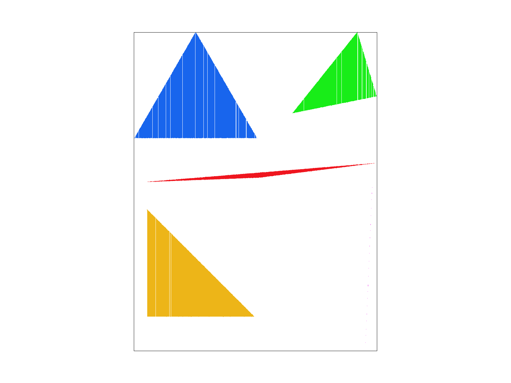
Extra credit: We added an optimization that keeps track of when we first start seeing a pixel that has any subpixel inside the triangle, and once we’ve passed that and hit a row where no subpixels are inside, we break early from the loop. This avoids checking scan lines that are definitely empty after the triangle ends vertically.
if (pixel_has_any_inside) in_triangle = true;
else if (in_triangle) break;
We added a timer using chrono at the start and end of the triangle rasterization function to measure how long it takes:
| Optimization | Time (?s) |
|---|
| No early exit | 4533 |
| With early exit | 1092 |
This shows a speedup, especially for large triangles with lots of empty scanlines.
Task 2
Supersampling is used to reduce aliasing artifacts, such as jaggies, by taking multiple samples per pixel and averaging them. Instead of determining a pixel’s color based on a single point, we take multiple samples within the pixel and blend them, resulting in smoother lines, curves, and triangle edges.
Our supersampling implementation works by doing the following:
Create a sample_buffer of size width*height*sample_rate
Store each subsample linearly using index = ((y * width + x) * sample_rate) + (i * sqrt_rate + j);
x, y are pixel coordinates
i, j are the subpixel offsets
sqrt_rate is the square root of the same_rate
Loop through all subsamples (in rasterize_triangle)
Compute coordinates of each subpixel:
float sub_x = x + (i + 0.5f) / sqrt_rate;
float sub_y = y + (j + 0.5f) / sqrt_rate;
Use the edge function test to see if the subsample is inside of the triangle
If it is, write the color to the correct sample_buffer index
At the end (in resolve_to_framebuffer()), average the sample_rate subsamples per pixel
Convert col to RBG and store it in rgb_framebuffer_target
These results are observed because with 1 sample per pixel (no supersampling), the pixel is either the triangle or not, leading to jaggies. With 4 samples, there are softer edges because intermediate colors are used to represent either 25%, 50%, or 75% filled. At 9, then 16 samples per pixel, the transitions get even smoother, and this is evident when zooming into the triangle tips or edges at small angles.
Task 3
I wanted the cubeman to look like a baby dancing, with their short arms pointing in different directions.
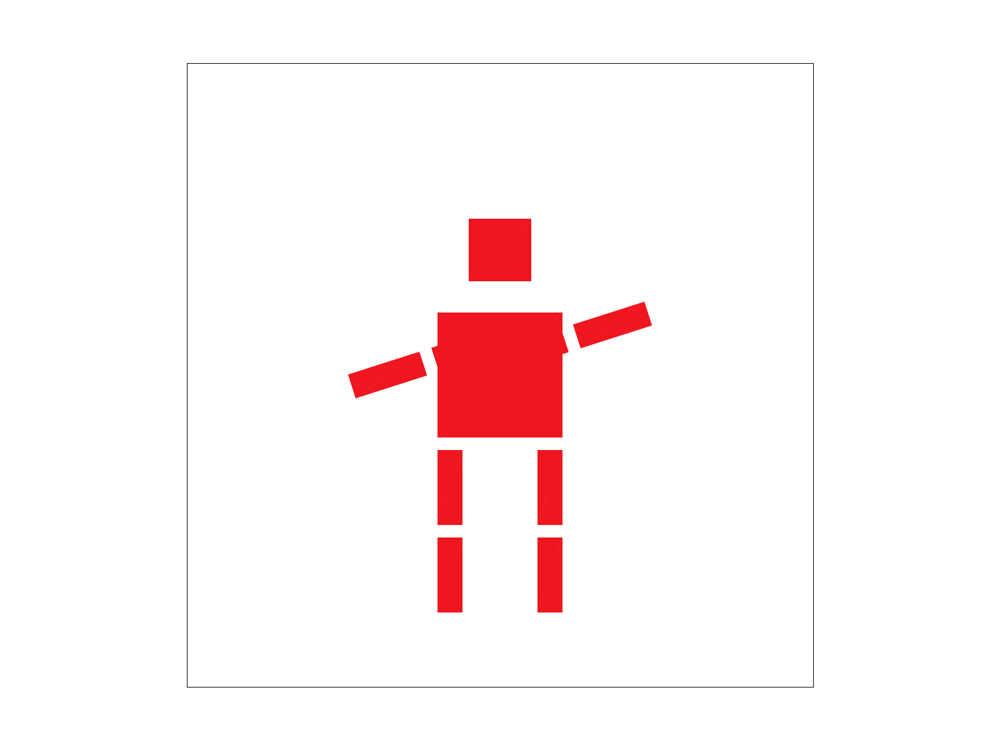
Task 4
Barycentric coordinates are a way to describe the position of a point inside a triangle using weights from the triangle’s three vertices. If you have a triangle with points A, B, and C, any point inside the triangle can be written as a combination of those three: P=αA+βB+γC
The key is that the weights (α, β, γ) always add up to 1. For example, if a point is exactly on vertex A, α will be 1 and the others 0, and so on. The closer the point is to a vertex, the more weight that vertex contributes. This makes barycentric coordinates really useful for interpolating things like color or texture coordinates across the triangle.
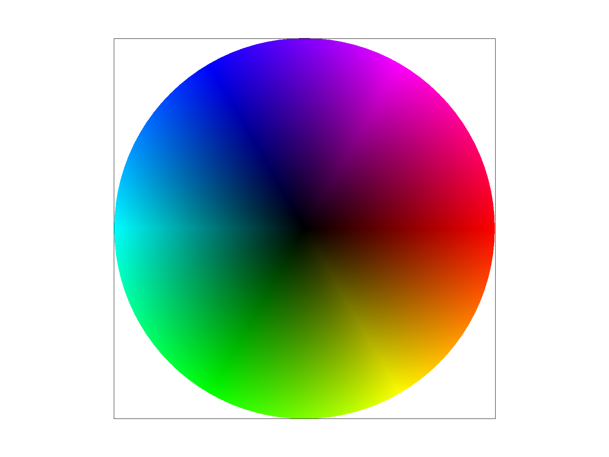
Task 5
Pixel sampling is how we figure out what color to use when mapping a texture image onto a triangle in our scene. Since the texture coordinates (u, v) usually don’t line up perfectly with pixel centers in the image, we need a strategy for choosing which texture color to assign to each subpixel in the triangle.
There are two main pixel sampling methods we worked with: nearest sampling, and bilinear sampling.
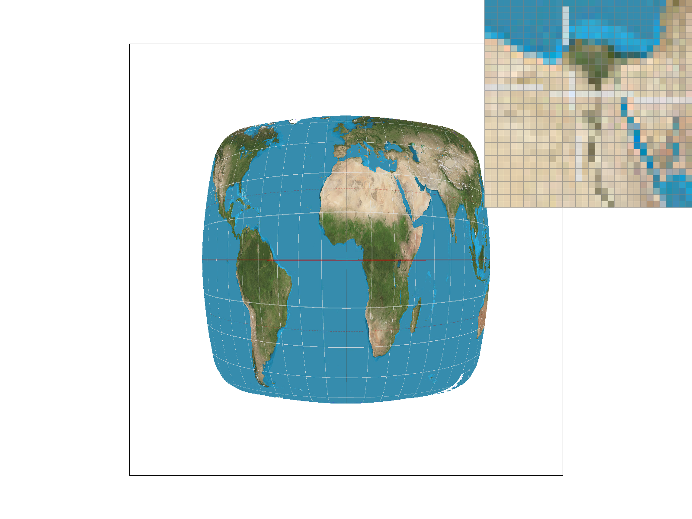
Nearest sampling @ 1 spp: The texture looks jagged and aliased: especially around the edges and diagonals.
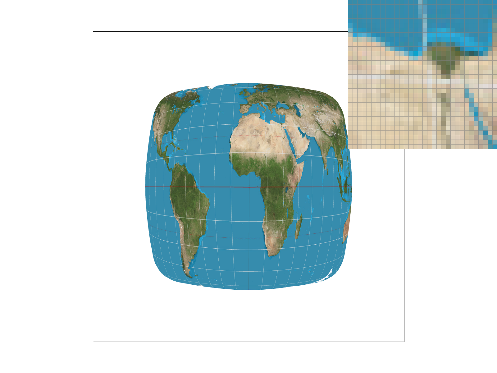
Nearest sampling @ 16 spp: Slightly better due to supersampling, but still shows harsh blocky transitions.
Instead of picking just one texel, bilinear sampling blends the colors of the four texels surrounding the (u, v) point.
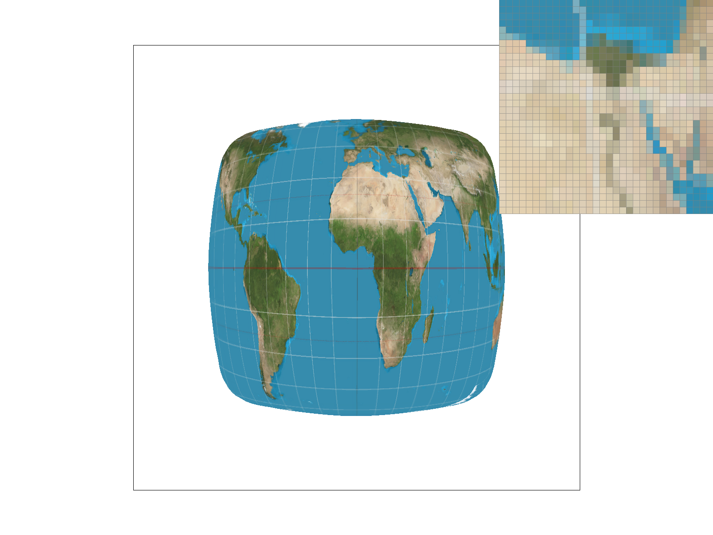
Bilinear sampling @ 1 spp: Already much smoother than nearest, even without supersampling.
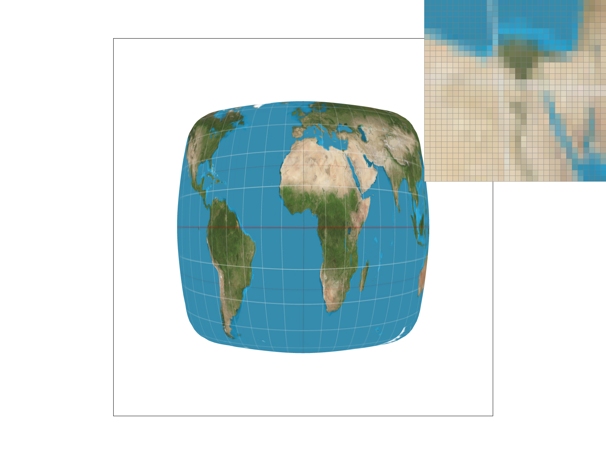
Bilinear sampling @ 16 spp: Best result, soft, clean transitions with no visible aliasing or pixelation.
Task 6
Level sampling is a technique we use in texture mapping to decide which resolution of a texture to sample from. When a texture is far away or scaled down, we don’t need to sample from the full-resolution image (that would be wasteful and could cause aliasing. Instead, we use mipmaps, which are precomputed, smaller versions of the texture, and choose the one that best fits how the texture appears on screen.
In our rasterize_textured_triangle() function, we calculated the screen-space partial derivatives of the texture coordinates (du/dx, du/dy, dv/dx, dv/dy) using barycentric coordinates and the triangle's transformation matrix. These were stored in the SampleParams struct as p_dx_uv and p_dy_uv.
Then, depending on the selected LevelSampleMethod (e.g., L_ZERO, L_NEAREST), we computed a mipmap level using
float L = max(norm(p_dx_uv), norm(p_dy_uv));
float level = log2(L);
Here’s a quick summary of the tradeoffs we noticed when using different combinations of sampling strategies:
| Technique |
Image |
Speed |
Memory Usage |
Antialiasing Quality |
| P_NEAREST + L_ZERO |
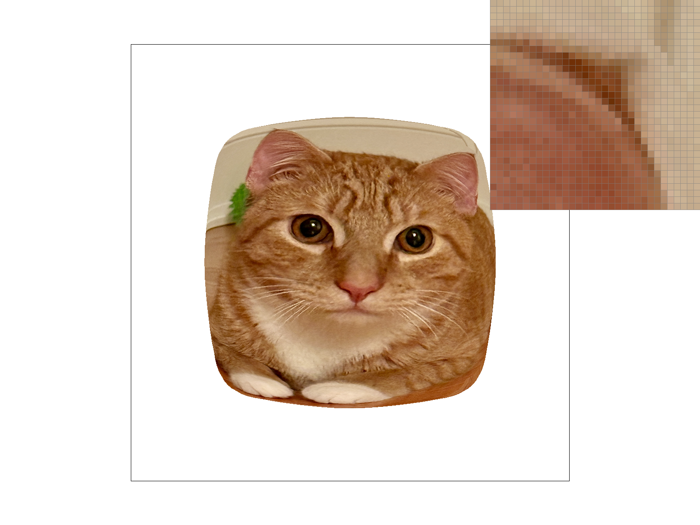 |
Fastest |
Low |
Poor (lots of aliasing) |
| P_LINEAR + L_ZERO |
 |
Fast |
Low |
Better than nearest |
| P_NEAREST + L_NEAREST |
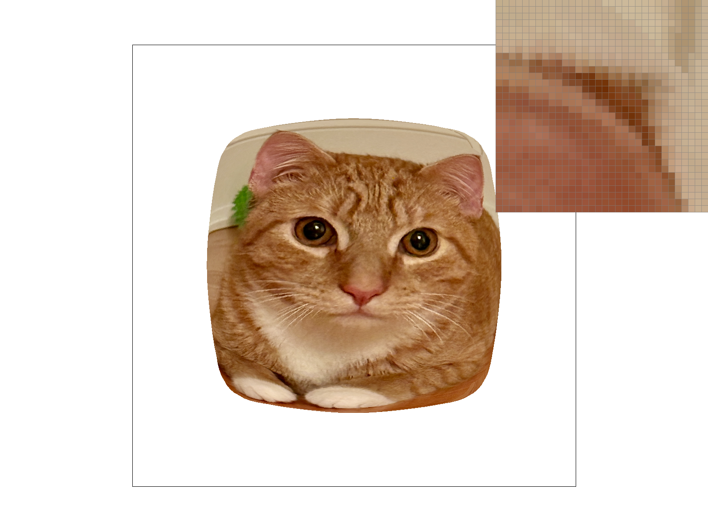 |
Medium |
Higher |
Medium quality |
| P_LINEAR + L_NEAREST |
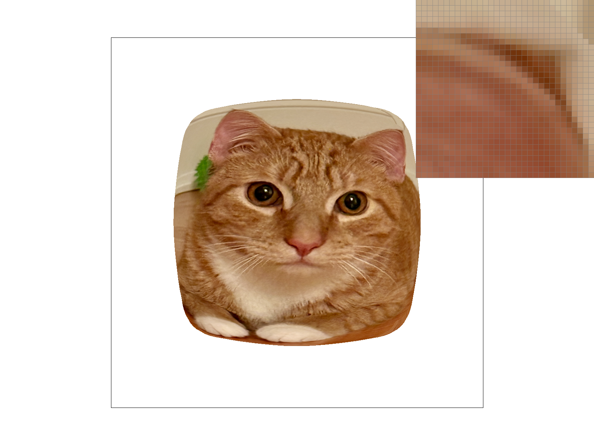 |
Slower |
Higher |
Best quality overall |
Task 7 (Extra Credit)
To create this image, I first drew a pixel art bunny using the Piskel app and exported it as a PNG file. Then, I used a Python script (png_to_svg.py) to convert the PNG into an SVG file made up of colored rectangles, turning the raster image into a vectorized pixel art representation.
For the script, I used ChatGPT for minimal assistance in understanding how to do the following:
Load and resize the PNG image using the Pillow library
Loop through each pixel and extract its RGBA values
Format the RGB values into hexadecimal color codes
Write each pixel as a <rect> element into an SVG file
Save the final output at a desired resolution and grid size
I carefully reviewed and modified the script to fully understand each part. For example, I learned how to use Python's f-string formatting to convert RGB values into hex codes (#{r:02x}{g:02x}{b:02x}), and how to calculate the correct size and position for each rectangle on the SVG canvas.
The final script is included in my src/ directory as png_to_svg.py, and the output image is saved as competition.svg in the docs/ folder.
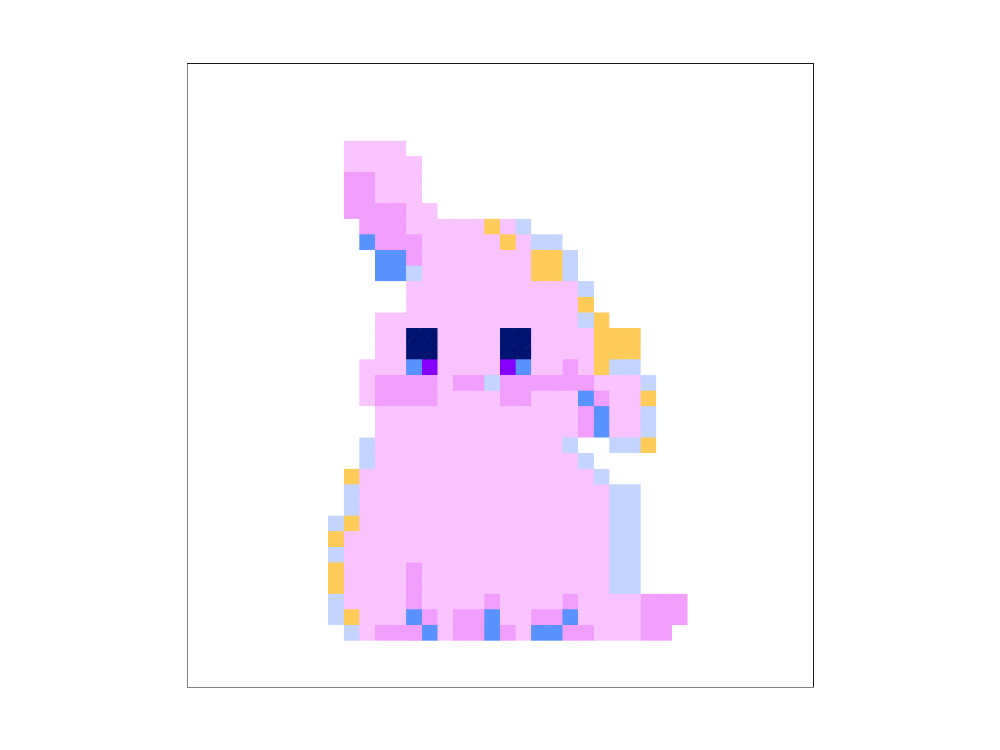